Causality Between the Frames
Causal Discovery in Multivariate Time Series
Sergey Plis

outline
- Problem Definition
- Manual Phase
- ASP Phase
- Deliberate Undersampling
Problem definition
Multimodal Causal Learning?
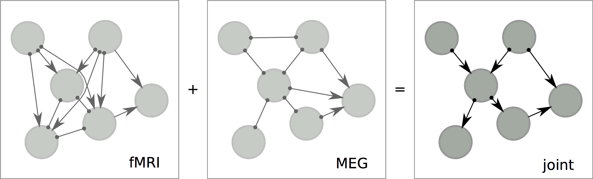
are they even compatible!?
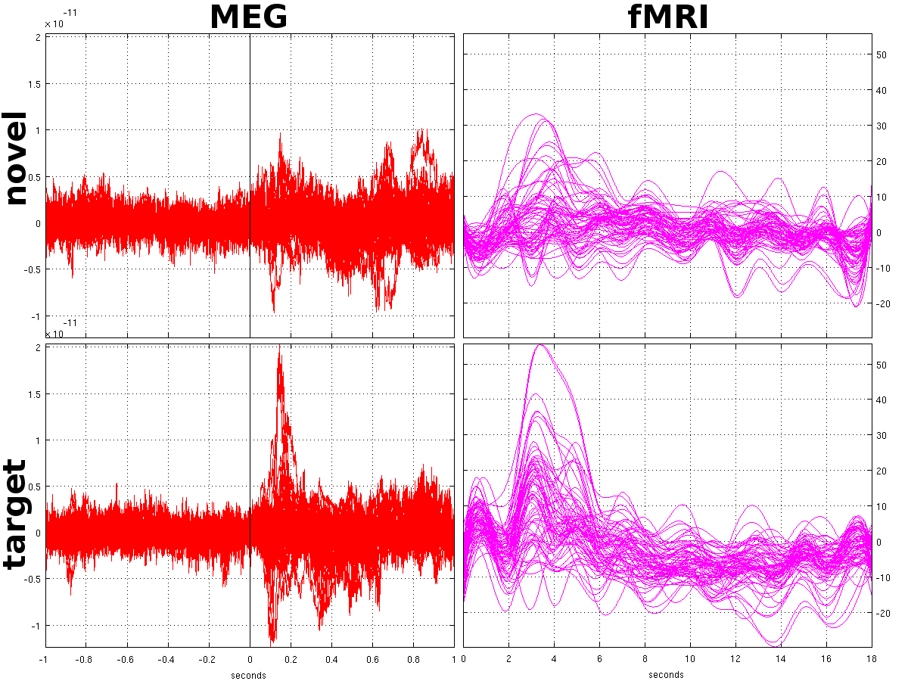
the situation
Causal timescale $\ne$ Measurement timescale
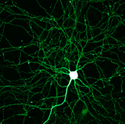
$\approx100ms$
$\approx100ms$
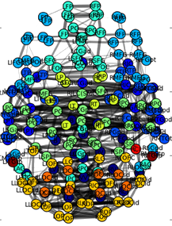
$???$
$???$
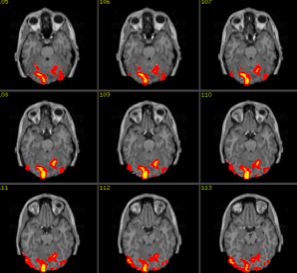
$\approx2s$
$\approx2s$
What causal inferences can be made in this situation?
two challenges
- Forwards inference: Given a causal structure at causal timescale, what is the implied structure at (undersampled) measurement timescale?
- Backwards inference: Given inferred causal structure at measurement timescale (with unknown undersampling), what structures at causal timescale are possible?
Forward problem
representation
- Dynamic Bayesian Network (DBN)
- causally sufficient
- first order Markov
- no isochronal edges
undersampling effect
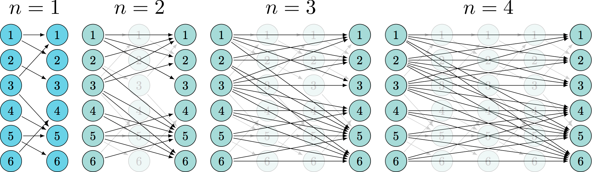A couple of results
Lemma 1 For all $u$, ${\cal G}^u$ contains no directed edges between variables at the same time step.
Lemma 2 If the Markov order of ${\cal G}^1$ is $1$, then the Markov order of all ${\cal G}^u$ is also $1$ (relative to measurement at rate $u$).
Compressed Graph
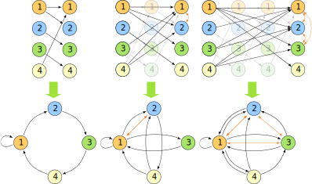(better) representation
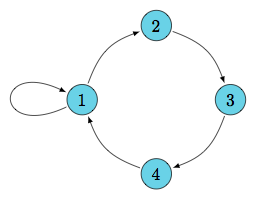
undersample
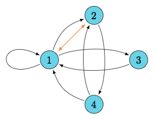
simple loops
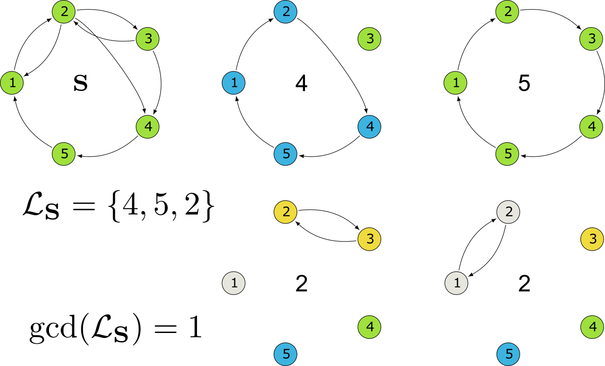specific behavior: DAG
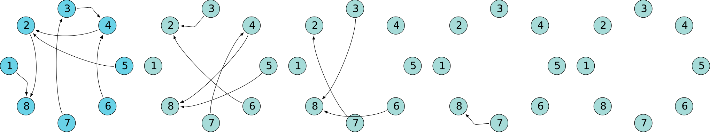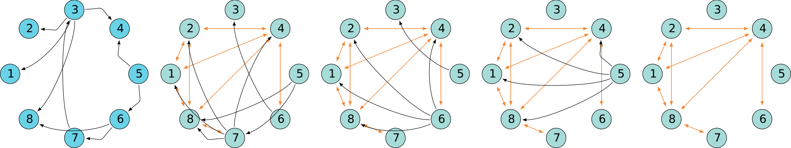
Specific behavior: Superclique SCC
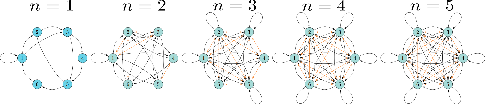Specific behavior: Oscillating SCC
Take-home points
- Causal relations apparent at the measurement time-scale can be very far from true relations
Manual phase
known undersampling rate
Virtual nodes
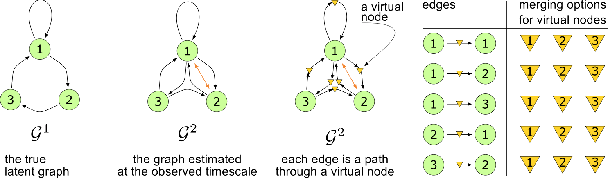Conflict persistence
conflicts persist
${\cal{G}}^1 \text{ conflicts with } {\cal{H}}^u
\implies \forall {\cal G} \supseteq {\cal G}^1
\: {\cal{G}} \text{ conflicts
with } {\cal{H}}^u$
Search Tree
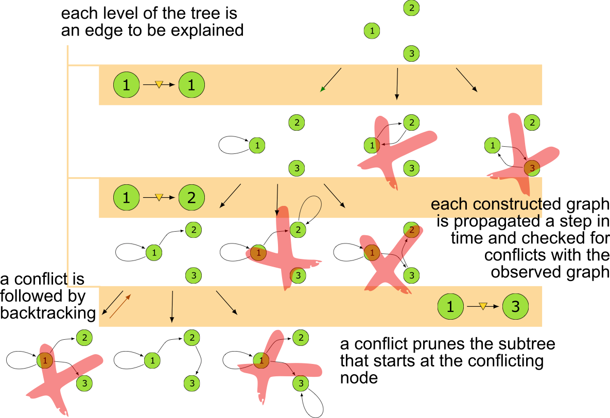
Unfortunately it is slow
computational complexity
- $\{ m_1 , \dots , m_l \}$ - the sets of virtual node identifications for each of the edges or edge-pairs
- $\prod_i^{l} \text{len}(m_i)$ - computational complexity of using edge-pairs
- $\text{len}$ - the number of possible identifications for that particular edge or edge-pair
- Computational advantage, expressed as a log-ratio: $$ \log{r} = \sum_i^{l} \log{\text{len}(m_i)} - e\log{n}. $$
still not fast enough
- pre-computed $O(n^2)$ pruning data-structure
- employed additional constraints and observations
6-node graphs

unknown undersampling rate
If ${\cal G}^{1} \subseteq {\cal{J}}^1$, then $\forall
u [ {\cal G}^{u} \subseteq {\cal{J}}^u]$
If ${\cal G}^{u} \nsubseteq {\cal H}$, then $\forall
{\bf E} [ ( {\cal G}^{1}_{\bf E} )^u \nsubseteq {\cal
H} ]$
If
$\forall u [ {\cal G}^{u} \nsubseteq {\cal H} ]$,
then $\forall {\bf E}, u [ ( {\cal G}^{1}_{\bf E}
)^u \nsubseteq {\cal H} ]$
Answer Set Programming
https://gitlab.com/undersampling/gunfolds 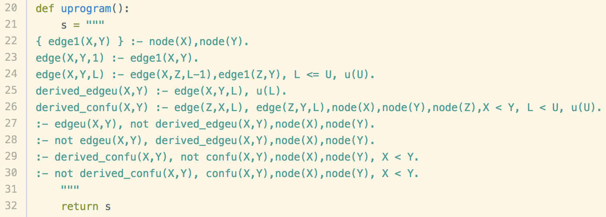
Take-home points
- Our algorithms nonparametrically recover equivalence classes from graphs at the measurement timescale
- Surprisingly often, these equivalence classes are singletons
- When the undersampling rate is known, we can recover moderately large graphs (12+ nodes)
ASP phase
Equivalence Class
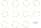Obtain the equivalence class
-
Theorem Deciding whether a consistent ${\cal G}^1$ exists for a given $\mathcal{H}$ is NP-complete, for all undersampling rates $u\geq2$.
- Parametrically: M. Gong, K. Zhang, B. Schoelkopf, D. Tao, and P. Geiger. "Discovering temporal causal relations from subsampled data." ICML 2015.
- demonstrated on 2 random variables for fixed $u$
- Non-Parametrically: S. Plis, D. Danks, C. Freeman, and V. Calhoun. "Rate-agnostic (causal) structure learning". NIPS 2015.
- demonstrated on 6 random variables for all $u$
we can handle
$\approx 100$ variables
What enabled this result
- Use of Answer Set Programming
- constraint satisfaction paradigm
- Exploiting Problem Structure
- strongly connected components
if we exploit the SCC structure
Estimation errors
(work in submission)
Edge Breaking Experiment
Value-Add
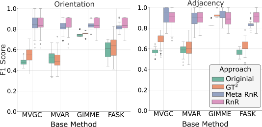Robustness
Salience Network (fMRI)
Take-home points
- Leveraging the flexibility of ASP, we built a reverse solver $10^4\times$ faster than ASP-free approaches
- We exploit graph SCC structure to handle 100-node graphs
- Method remains effective even in the presence of estimation noise
- However, the problem remains computationally demanding
deliberate undersampling
slower sampling and equivalence class size
when slower data may help
Let's test the theory
Take-home points
- Theory: Leads to a counter-intuitive conclusion. Slower sampling can aid causal discovery, contrary to the standard correctly-held intuition to sample faster.
- Evidence: Deliberate undersampling is empirically helpful in a significant percentage of cases.
- The gains in these cases can be substantial.
- Hybrid approach: Inspired by theory, experiments show comparable gains when combining slow and fast sampled data.